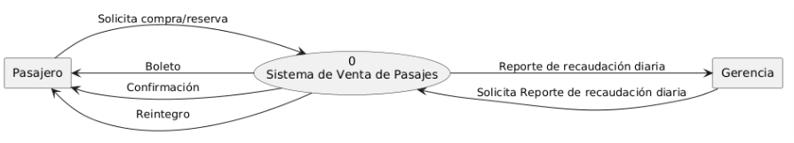

De los siguientes textos, utilizar el diseño global D.F.D. Además defina objetivos, límites y alcances. Realice nivel 0, 1 y 2 utilizando almacenes solo en el nivel 2.
Se requiere la realización de un Sistema de Información para una empresa de transporte interurbano de pasajeros que realiza las ventas al presentarse los interesados en la ventanilla pero que, además, permite la realización de reservas vía telefónica.
En cuanto a la venta de pasajes, estos pueden ser adquiridos hasta con treinta días de anticipación, cerrándose los mismos cinco minutos antes de la salida del coche.
Las reservas se mantienen vigentes hasta doce horas antes de la de partida, dándoselas por canceladas si para ese momento el pasajero no ha pasado a retirar su boleto.
La política que se aplica para el caso de las devoluciones es la siguiente:
Al momento de cobrar los pasajes, se emite el boleto correspondiente, en donde figura el día y hora de salida, el tipo de servicio (cama, semi-cama, ejecutivo) y el importe del pasaje, de acuerdo a las tarifas vigentes al momento del pago.
Cuando el pasajero compra boletos de ida y vuelta, se le hace un descuento del 20% y si presenta carnet de jubilado o de estudiante del 15%. Por otro lado, la Gerencia desea saber cuánto se recauda diariamente.
@startuml
left to right direction
rectangle "Pasajero" as Pasajero
rectangle "Gerencia" as Gerencia
usecase Sistema as "0
Sistema de Venta de Pasajes"
Pasajero --> Sistema : Solicita compra/reserva
Sistema --> Pasajero : Boleto
Sistema --> Pasajero : Confirmación
Sistema --> Pasajero : Reintegro
Gerencia --> Sistema : Solicita Reporte de recaudación diaria
Sistema --> Gerencia : Reporte de recaudación diaria
@enduml

HACER
HACER
Una fábrica de muebles para oficina desea sistematizar las compras de materiales que se solicitan desde el Sector de Producción, siendo también de interés de los dueños el hecho de poder contar con un adecuado seguimiento de los pagos que deben realizarse, ya que los mismos pueden llegar a ser diferidos y/o en cuotas.
La operatoria que se realiza en la actualidad, consiste en que, recepcionado el requerimiento de materiales, la compra se realiza previo cotejo de precios. Para ello se consulta la carpeta en donde están guardados los antecedentes de cada uno de los proveedores (por ejemplo, si realizan las entregas en las fechas previstas) y agrupados por rubro que trabajan. Si no hay proveedores registrados para poder adquirir el material necesario, se trata de ubicar al me- nos tres de ellos, y se incorpora el rubro a la carpeta de Proveedores.
Teniendo ya los proveedores a cuales solicitar los materiales, se les requiere un presupuesto por escrito, el cual luego es analizado y se define la operación, operación de la que se notifica al Sector de Pagos para que se encargue de realizarlos en el momento que corresponda. Lo mismo se hace respecto al Sector Producción, a los efectos de que sepan cuando y de dónde recibirán lo solicitado.
Se desea sistematizar el alquiler y cobro de películas de un vídeo club en donde sólo pueden alquilar aquellos interesados que son socios, lo que los empleados comprueban haciendo uso de un listado en donde figuran los socios y que es enviado por la Gerencia. Por otro lado, los empleados también cuentan con otro listado en donde figuran las películas que hay en stock, la cantidad de cada una de ellas y el precio del alquiler.
Para el alquiler de las películas, se ha fijado una política que establece que si el socio está atrasado en la devolución de más de una de ellas, no se le alquila hasta tanto se ponga al día con las devoluciones y con el pago de los recargos correspondientes. Por otro lado, todos los pagos deben ser realizados antes de retirar los vídeos y en efectivo.
El horario límite para la devolución de películas es a las 20:00 horas del día siguiente al alquiler realizado Pasado este límite se cobra un recargo de 20% del importe facturado, además de no volvérsele a alquilar hasta tanto se normalice la situación.
Una fábrica produce productos elaborados con su propia materia prima, los cuales vende en forma directa a una cartera de clientes que posee. Los clientes realizan sus pedidos en forma telefónica y los mismos son entregados a domicilio por un repartidor junto con el remito correspondiente, y se lleva la copia firmada por el cliente. A fin de mes se realiza la facturación de todo lo vendido en el mes emitiéndose una única factura. Las facturas son entregadas a un cobrador quien se encarga de realizar la cobranza a domicilio, el cliente abona la totalidad de la factura en un plazo de 10 días de emitida la misma. Caso contrario, se aplica un recargo por cada día de atraso. Todos los días 15 de cada mes se envía, a Gerencia, un listado con todos los clientes que presentan saldo impago y a los clientes, un aviso de moroso.
La empresa desea llevar un control de stock de sus productos, y ha determinado para cada producto un stock mínimo debiendo emitirse diariamente un listado de los productos que se encuentran por debajo de dicho valor para poder realizar la reposición de los mismos.
Se desea realizar un sistema que cubra las necesidades de ventas de los productos, el control de stock y en control de pagos.
Una empresa que se dedica a la venta de libros por correo y con modalidad de pago diferido a personas que previamente han adherido a este método de ventas, desea sistematizar el procedimiento tanto de los envíos a realizar como el de los cobros de los mismos. También es de interés tener bajo control a las posibles moras en el pago ya que, ante una situación semejante que lleve más de dos meses, no se efectúan más envíos a dicho cliente.
Para adherir al sistema, el interesado debe contactarse con la empresa, presentando, en forma personal o por correo, el formulario que recibiera del Sector Asociaciones, con toda la información que en ellos se requiere. No se aceptan fotocopias de dicho formulario.
El Sector de Ventas, según lo que se dispone lanzar al mercado, prepara la factura correspondiente y la envía a Despacho para que se realicen los envíos correspondientes. Una copia de esta factura es enviada a Cobros para que se puedan controlar los pagos que efectúan los clientes, pagos que pueden efectuarse a través de tarjeta de crédito o por medio de cheque o giro emitido a favor de la empresa.
En la actualidad no se realizan reclamos a los morosos, pero se desea que con la sistematización propuesta esta falencia pueda ser salvada, como así también tener listados semanales sobre los cobros que se han efectuado.
Se desea realizar un sistema de información para administrar un consorcio de un edificio de propiedad horizontal.
El consorcio está compuesto por todos los datos actualizados de cada unidad del consorcio, del titular de la misma y del porcentaje que le corresponde abonar en concepto de expensas, dicho porcentaje es fijado por el consejo de administración.
Diariamente el administrador registra los gastos que se producen imputándolos en el rubro de movimiento adecua- do. (ej.: rubro impuestos: impuesto inmobiliario municipal y provincial, etc.; rubro servicios: energía eléctrica, tasa de servicios sanitarios, etc.; rubro mantenimiento: facturas de compra de elementos tales como focos, arreglos del edificios, pintura, etc.).
Mensualmente se lleva a cabo la liquidación de expensas a cada unidad de consorcio. Este proceso calcula el monto total de los gastos producidos en el mes por el consorcio y el monto que debe abonar cada propietario en concepto de expensas. Este último se calcula prorrateando el total, de acuerdo a la cantidad de unidades funcionales y al porcentaje correspondiente a cada unidad. Se emite un recibo de liquidación de expensas y un detalle de los gastos totales que son repartidos por un cadete a cada unidad.
Mensualmente, cada propietario debe abonar las expensas correspondientes, en el período establecido por el Reglamento del Consorcio. Los pagos de las expensas se realizan en la oficina del administrador quien extiende un recibo cada vez que se efectúa uno.
En el caso de no haber pagado en término los titulares deben efectuar el pago en la oficina del administrador donde se le calculan los recargos por mora correspondientes. Los recargos por mora se calculan en base al índice del costo de la construcción.
Mensualmente el consejo de administración del consorcio quiere recibir la información de la recaudación y de lo moroso, para tomar las acciones pertinentes.